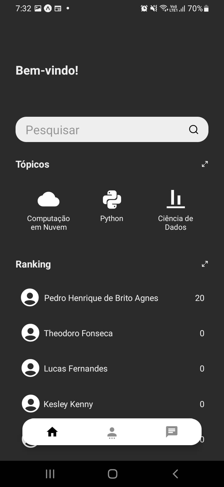

Algoritmia
Projeto desenvolvido como trabalho de conclusão de curso de Computação (Licenciatura) na UnB. Apresentado no semestre 2022/2.

Aqui você é capaz de aprender ou ensinar de forma gamificada.
Faça o seu cadastro no aplicativo para começar a aprender ou, caso você seja professor, crie o seu curso por meio da plataforma Web, denominada Back Office.